У JavaScript слабка динамічна типізація. Це означає дві речі:
Ці властивості мови часто ускладнюють розробку великих і надійних додатків. Тому з'явилися рішення, які додають у JavaScript строгу статичну типізацію. «Строга» означає заборону автоматичного приведення типів, “статична” означає, що перевірка типів відбувається на етапі написання коду.
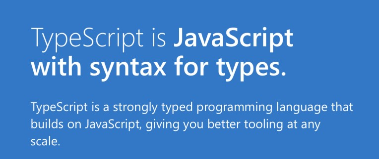
TypeScript – це строго типізована мова програмування, яка базується на JavaScript. https://www.typescriptlang.org/
Головна відмінність TypeScript від JavaScript - можливість додавати анотації типів до змінних, аргументів функцій і їхніх значень, що повертаються.
Розвиток TypeScript розпочався наприкінці 2012 року. Хоча він виник в компанії Microsoft, його фактичним творцем є програміст Андерс Хейлсберг, також відомий як творець таких мов, як Delphi, C#. Проте цей проект відразу став розвиватися як OpenSource. І вже з самого початку нова мова швидко поширилась через свою гнучкість і продуктивність. Популярність і актуальність ідей нової мови призвели до того, що деякі з цих ідей пізніше стали частиною нового стандарту JavaScript. Переваги TypeScript були взяті на озброєння творцями ряду поширених і широко використовуваних фреймворків, таких як Angular 2+ та Vue3.
По-перше, слід зазначити, що TypeScript - це строго типізована та компільована мова, що може бути ближчою до програмістів Java, C# і інших строго типізованих мов. На виході компілятор створює той самий JavaScript, який потім виконується браузером. Однак строга типізація зменшує кількість потенційних помилок, які могли б виникнути при розробці на JavaScript.
По-друге, TypeScript реалізує багато концепцій, які є властивими об'єктно-орієнтованим мовам, таким як інкапсуляція, наслідування, поліморфізм та модифікатори доступу тощо.
По-третє, потенціал TypeScript дозволяє швидше і простіше писати великі складні програми, відповідно їх легше підтримувати, розвивати, масштабувати та тестувати, ніж на стандартному JavaScript.
По-четверте, TypeScript розвивається як проєкт з відкритим кодом і, як і багато інших проєктів, розміщений на GitHub. Адреса репозиторію - https://github.com/Microsoft/TypeScript. Крім того, він є крос-платформним, що означає, що для розробки ми можемо використовувати як Windows, так і MacOS або Linux.
По-п'яте, помилки розбіжності типів будуть помітні на стадії написання коду. Тобто не потрібно запускати програму, щоб дізнатися про помилки в типізації.
Дослідження DOU:
Приклад коду мовою JavaScript разом зJSDoc
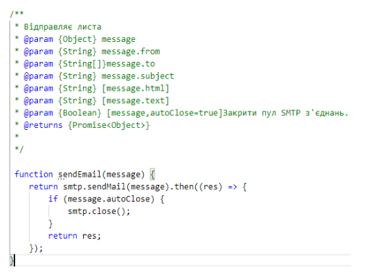
Приклад коду мовою TypeScript
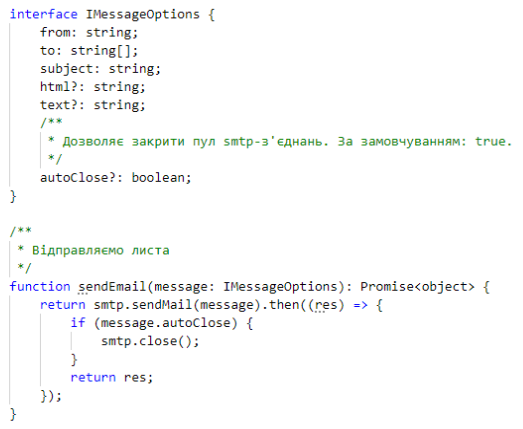
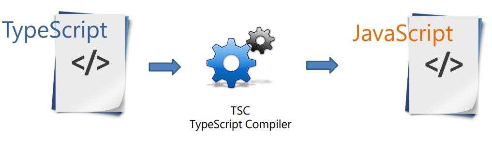
Транскомпілятор або транспілятор - програма, яка приймає вихідний код, написаний на одній мові програмування і повертає еквівалентний вихідний код на тій самій або іншій мові програмування
Транспілятор – це спеціальний інструмент, який “перекладає” вихідний код з однієї мови програмування в код іншою мовою програмування. Також обробка коду може виконуватися в межах однієї мови програмування. Транспілятор парсить (“читає та розуміє”) сучасний код і переписує його, використовуючи старі синтаксичні конструкції, які працюють на старих двіжках.
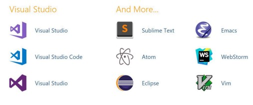
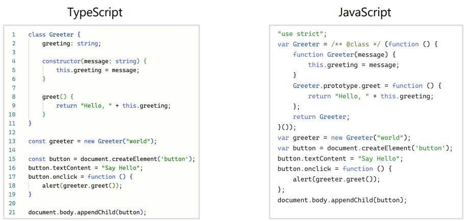
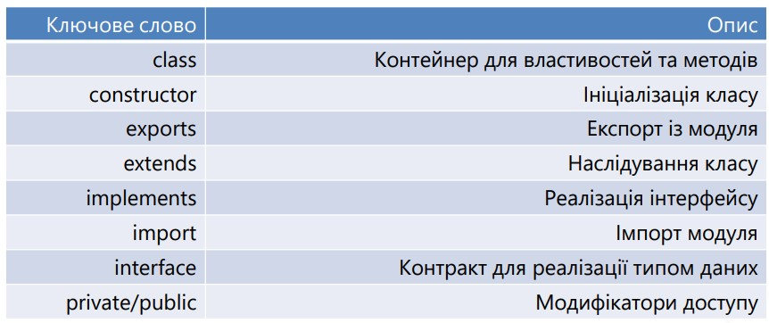
Tsconfig.json – файл, вказує на те, що поточна директорія є коренем TypeScript проєкту.
При запуску tsc без вказівки файлу для компіляції використовуватимуться налаштування з файлу tsconfig.json
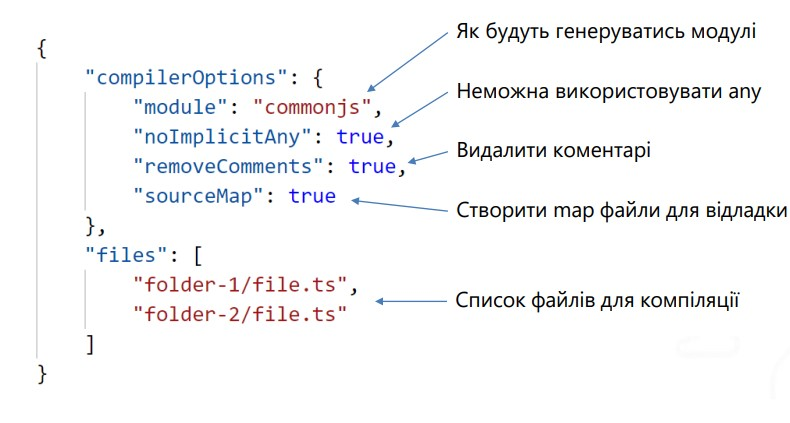
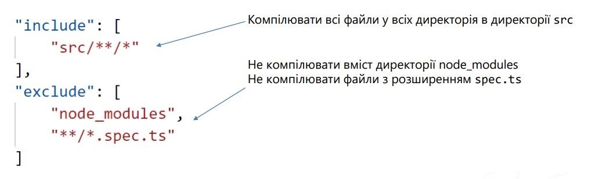
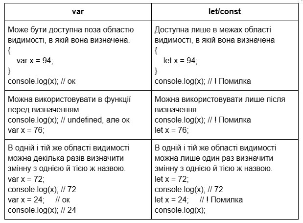
У TypeScript існують такі базові типи:
TypeScript визначає функції за допомогою ключового слова function, але при цьому додає додаткові можливості з роботи з функціями. Зокрема, можна визначити тип переданих параметрів і тип поверненого значення. Функція може мати параметри, які вказуються після назви функції у дужках через кому. Через двокрапку після імені параметра вказується його тип.
Кожна функція має свій тип, як і звичайні змінні. Тип функції фактично представляє комбінацію типів параметрів і типу, який повертається. У загальному вигляді визначення типу функції виглядає наступним чином: (параметр1: тип, параметр2: тип,...параметрN: тип) => тип_результата; У дужках йде перелік через кому параметрів і їх типів. Після списку параметрів через оператор => вказується тип, який повертається функцією.
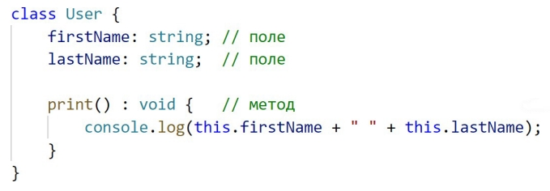
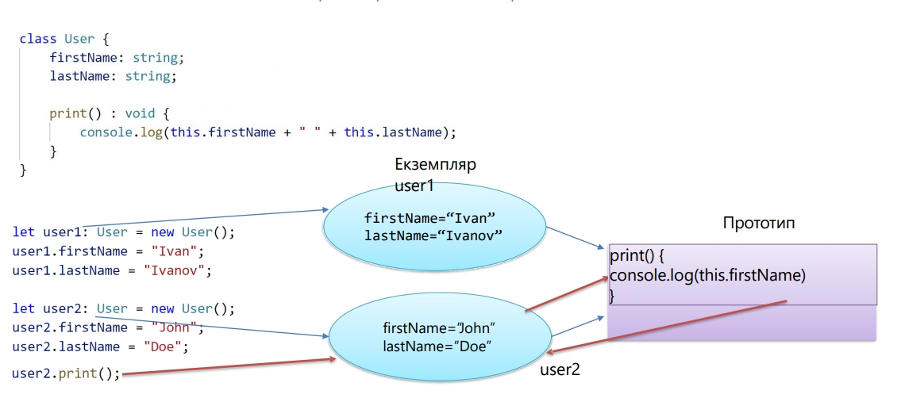
Конструктор – спеціальний метод, який використовується для ініціалізації екземпляра.
У тілі класу конструктор створюється за допомогою ключового слова constructor.
Під час створення екземпляра класу для виклику конструктора необхідно використовувати ключове слово new.
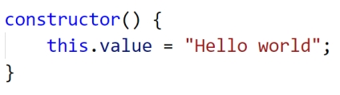
public, private, protected – ключові слова, модифікатори доступу. З їхньою допомогою визначається видимість елементів класу.
Усі члени класів без модифікатора доступу, за замовчуванням використовують модифікатор доступу public
Успадкування (Наслідування, Спадкування) (англ. inheritance) - механізм створення класу за допомогою розширення вже існуючого класу. Таким чином, ми можемо створити нову функціональність на основі тої, що існує.
Extends – ключове слово, яке визначає який клас буде базовим (батьківським) для поточного.
Клас-спадкоємець отримує від батьківського властивості та методи
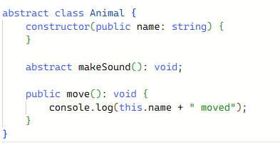
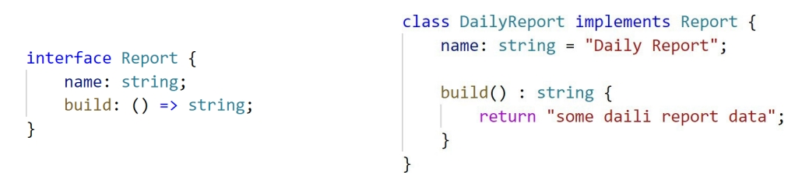
Уявіть величезний і дорогий, високотехнологічний друкарський друкарський верстат, виконаний у вигляді моноліту, що, своєю чергою, робить його придатним для друку тільки одного номера газети. Тобто для друку сьогоднішніх новин необхідний один друкарський верстат, для завтрашніх - інший і т.д. Подібний верстат можна порівняти зі звичайним типом, ознаки якого після оголошення залишаються незмінними при його реалізації. Інакше кажучи, якщо за існування типу A, опис якого містить поле, що належить до типу number, знадобиться тип, відмінність якого складатиметься лише в приналежності поля до іншого типу, виникне необхідність у його оголошенні.
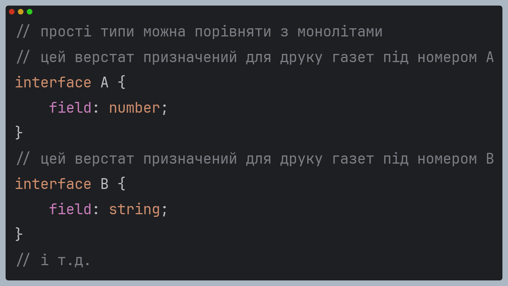
Узагальнене програмування (Generic Programming) - це підхід, за якого алгоритми можуть однаково працювати з даними, що належать до різних типів даних, без зміни декларації (опису типу).
В основі узагальненого програмування лежить таке ключове поняття як узагальнення. Узагальнення (Generics) - це параметризований тип, що дає змогу оголошувати параметри типу, які є тимчасовою заміною конкретних типів, конкретизація яких буде виконана в момент створення екземпляра. Параметри типу, за умови дотримання деяких правил, можна використовувати в більшості операцій, що допускають роботу зі звичайними типами. Усе це разом дає привід порівнювати узагальнений тип із правильною версією друкарського верстата, чи заміні валу, призначеного для друкування інформації на папері, який проходить через них, можна порівняти з параметрами типу.
У реальності узагальнення дають змогу скорочувати кількість перетворень (приведень) і писати багаторазово використовуваний код, водночас підвищуючи його типобезпеку.
Цих прикладів має бути достатньо для утворення виразного образу узагальнень. Але, перш ніж продовжити, варто уточнити значення таких далеко не всім очевидних термінів, як - узагальнений тип, параметризований тип і універсальна конструкція.
Тип, що визначає параметр, позначається як узагальнений тип. Під час обговорення типів, що представляються параметрами типу, необхідно розуміти, що вони визначені в параметризованому типі. Коли оголошення узагальненого типу отримало реалізацію, то таку конструкцію, чи то клас, чи то функція, називають універсальною (універсальний клас, універсальна функція або метод).
Generic (узагальнений тип або шаблон) – спеціальний тип даних, який дозволяє створювати компоненти, не прив'язуючись до конкретного типу даних, а вказувати цей тип даних під час створення компонента
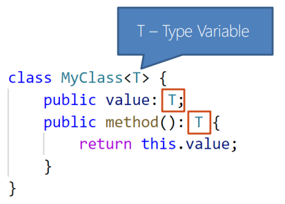
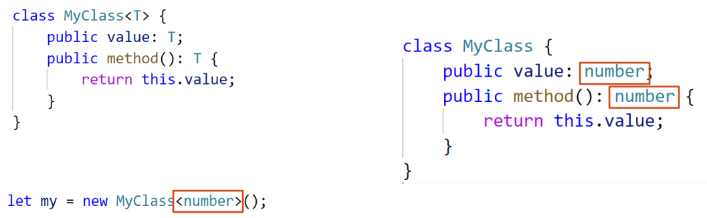
У TypeScript Generics можуть бути вказані для типів, що визначаються за допомогою:
Generics оголошуються за допомогою пари кутових дужок, у які через кому поміщено параметри типу, звані також типо-заповнювачами
або універсальними параметрами Type<T0, T1>
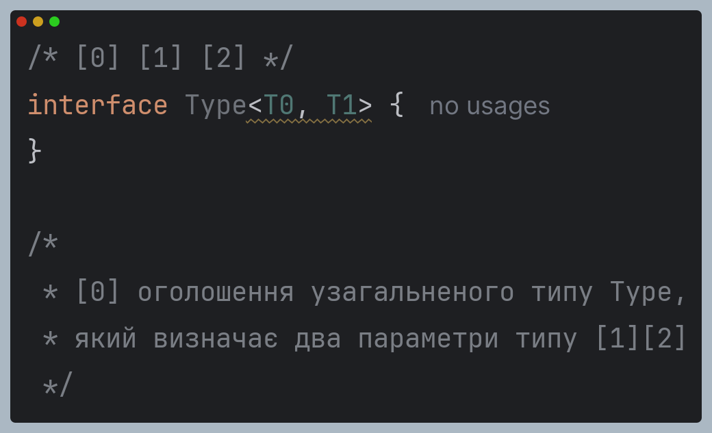
Параметри типу можуть бути вказані як тип скрізь, де потрібна анотація типу. Область видимості параметрів типу
обмежена областю узагальненого типу. Усі входження параметрів типу будуть замінені на конкретні типи, передані
як аргументи типу. Аргументи типу вказуються в кутових дужках, в яких через кому вказуються конкретні типи даних
Type<number, string>.
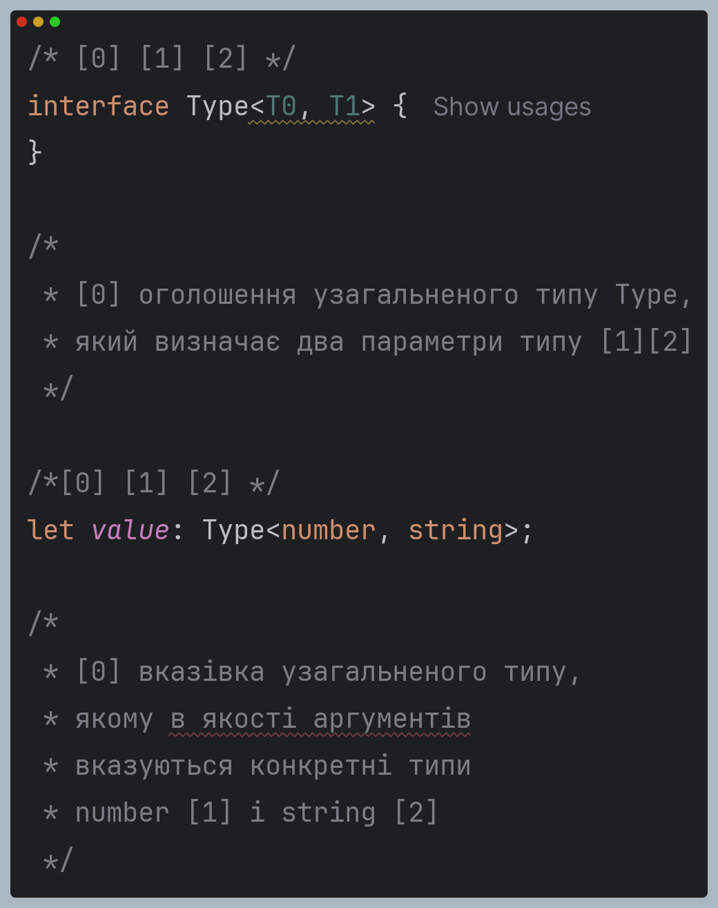
Ідентифікатори параметрів типу повинні починатися з великої літери і, крім фантазії розробника, вони також обмежені загальними для TypeScript правилами. Якщо логічну приналежність параметра типу можна встановити без жодних зусиль, як, наприклад, у випадку Array<T>, який кричить, що параметр типу T представляє тип, до якого можуть належати елементи цього масиву, то ідентифікатори параметрів типу заведено обирати з послідовності T, S, U, V і т. д. Також часта послідовність T, U, V, V, S тощо.
За допомогою K і V прийнято позначати типи, що відповідають Key/Value, а за допомогою P - Property. Ідентифікатором Z прийнято позначати поліморфний тип this.
Крім того, не виключені випадки, в яких краще виглядають повні імена, як, наприклад, RequestService, ResponseService, до яких ще можна застосувати Угорську нотацію - TRequestService, TResponseService.
Наприклад, побачивши в автодоповненні редактора тип Array<T>, на думку одразу спадає правильний варіант, що масив міститиме елементи, які належать до зазначеного типу T. Але, побачивши Animal<T, S>, можна ніколи не здогадатися, що ці типи даних будуть вказані в анотації типу полів id і arial. У цьому випадку було б набагато краще дати імена Animal<AnimalID, AnimalArial> або навіть Animal<TAnimalID, TAnimalArial>, що дасть змогу всередині тіла параметризованого типу Animal відрізняти його параметри типу від конкретних оголошень.
У разі, коли узагальнення вказано псевдоніму типу (type), область видимості параметрів типу обмежена самим виразом.
Область видимості параметрів типу при оголошенні функції та функціонального виразу, включно зі стрілочним, а також методів, обмежується їхньою сигнатурою і тілом. Іншими словами, параметр типу можна використовувати як тип при оголошенні параметрів, значення, що повертається, а також у допустимих виразах (анотація типу, приведення типу тощо), розташованих у тілі.
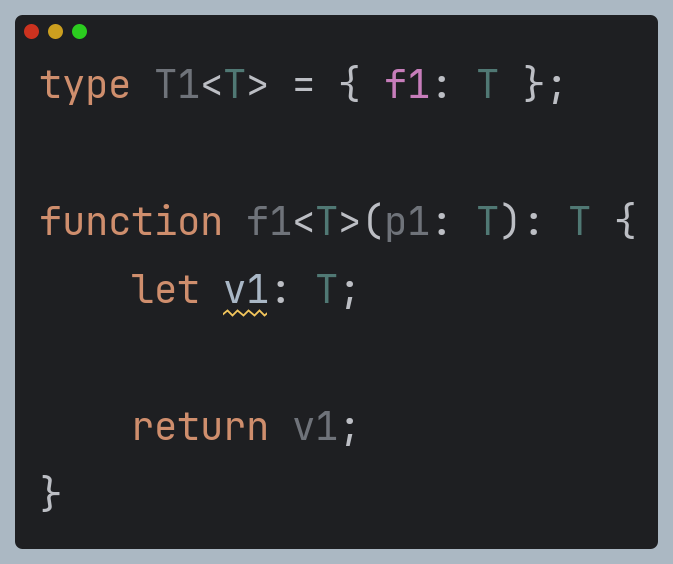
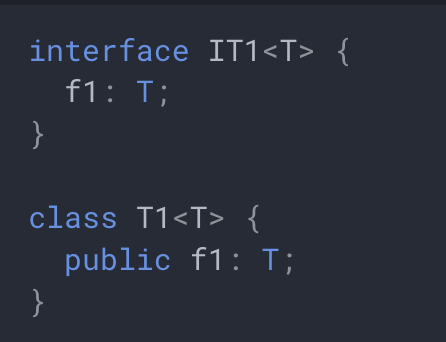
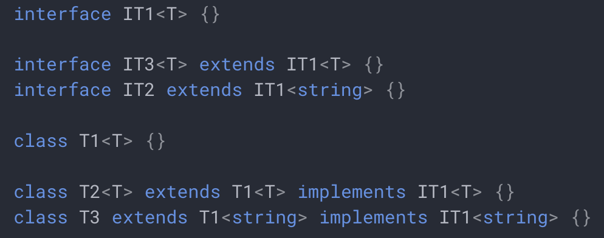
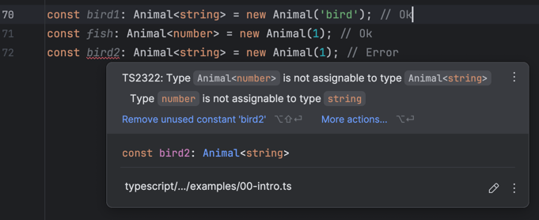
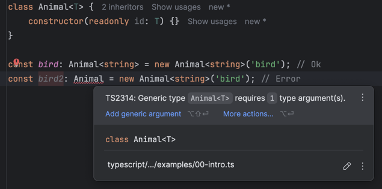
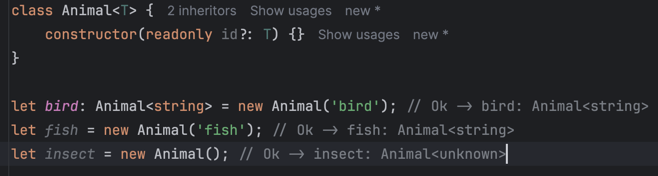
Дженерики в TypeScript використовуються для того, щоб створювати функції, класи, інтерфейси, або типи, які можуть працювати з різними типами даних, залишаючись при цьому типовобезпечними. Основна ідея дженериків полягає в тому, щоб уникати дублювання коду і забезпечувати більшу гнучкість та повторне використання коду.
Модулі розв'язують проблему різнорідних сутностей і колізій за допомогою рознесення коду по декількох файлах. Щоб колізії не виникали в межах одного файлу, використовують механізм просторів імен namespace.
Простір імен - механізм для групування коду та визначення окремих областей видимості.
Найбільше цей механізм корисний авторам бібліотек і обгорток з типами @types/. Вони укладають усі інтерфейси в один namespace, що збігається з назвою бібліотеки. Це гарантує відсутність колізій імен і спрощує користувачам злиття інтерфейсів.
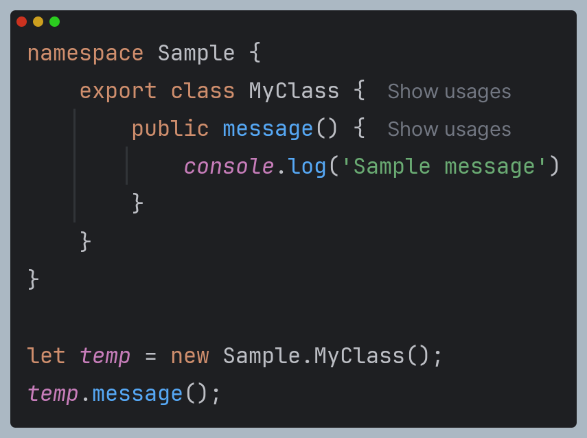
///<reference path="validator.ts">
tsc --outFile app.js main.ts
Компілюємо main.ts і всі пов'язані файли в один файл app.js
Модуль - окремий файл зі своєю областю видимості. Змінні, функції, класи та інші мовні конструкції, визначені в модулі, не доступні за його межами.
Файл, у якому на верхньому рівні перебуває import чи export, є модулем.
Залежності між модулями визначаються за допомогою ключового слова import.
Щоб імпортувати модулі, використовуються завантажувачі модулів, які відповідають за знаходження модуля та його завантаження перед виконанням програми.
Для завантаження модулів застосовуються спеціальні завантажувачі:
TypeScript підтримує роботу з модулями. Модулі є концепцією, яка принесена стандартом ES2015, проте в сучасних браузерах нативна підтримка модулів ще не реалізована.
Модулі певною мірою схожі на простори імен: вони можуть укладати різні класи, інтерфейси, функції, об'єкти. Також вони виділяються в окремі файли, що дозволяє зробити код програми більш ясним і чистішим, і разом з тим використовувати модулі в інших програмах.
Водночас модулі підключаються до програми не за допомогою тега script, а за допомогою завантажувача модулів.
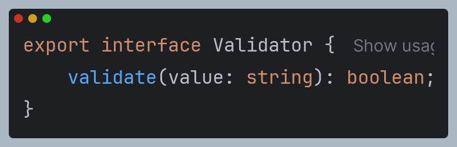
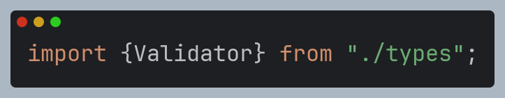
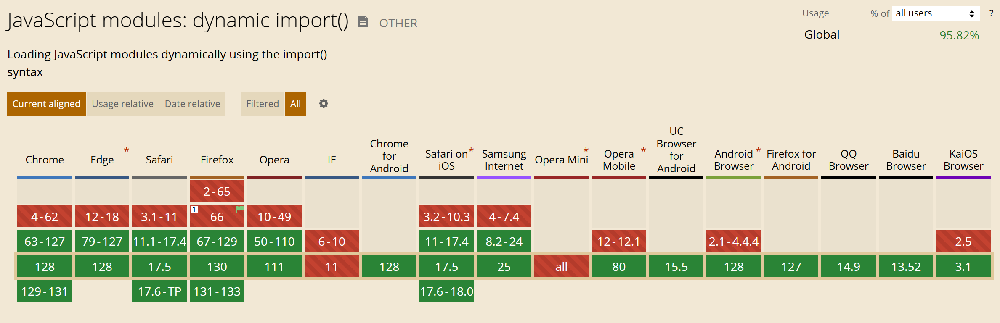
Основні способи визначення залежностей між модулями:
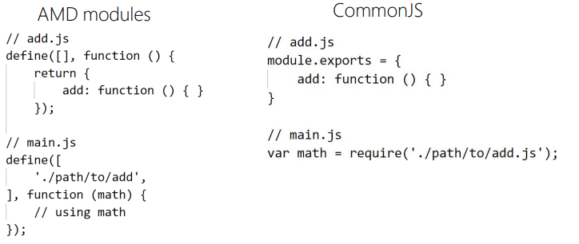
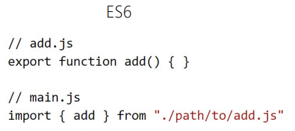
Порівняння для трьох основних систем модулів JavaScript: CommonJS, AMD і ES Modules:
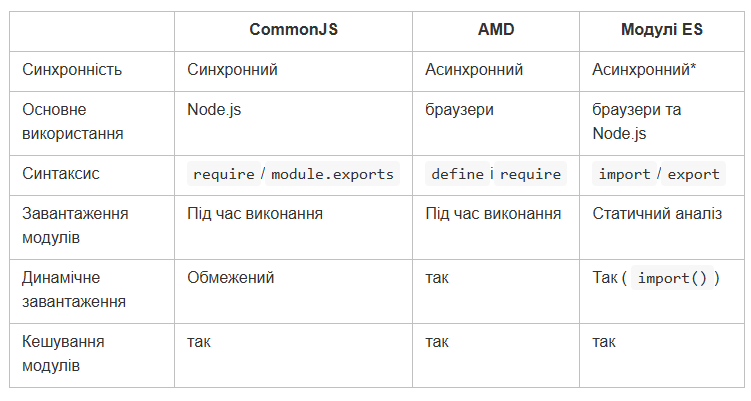
Webpack – інструмент для збирання JS файлів у пакети з дотриманням правильного порядку використання файлів. https://webpack.js.org/
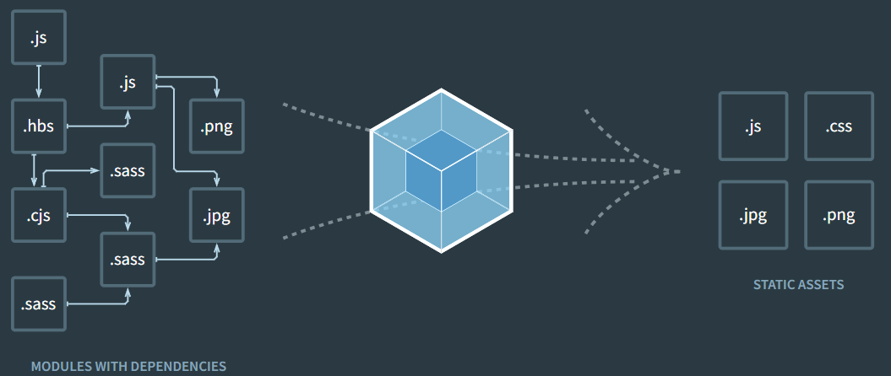
Для налаштування використовується файл webpack.config.js, який містить конфігурацію Webpack з основними параметрами:
Vite (франц. «швидкий», вимовляється /vit/) — інструмент для розробки фронтенд-застосунків, створений Еваном Ю (автором Vue.js) у 2020 році.
Складається з двох частин:
На відміну від Webpack, Vite не бандлить код під час розробки - браузер сам імпортує модулі нативно (import), а Vite лише трансформує їх на льоту.
Класичні бандлери (Webpack) при старті dev-сервера повинні побудувати весь граф залежностей заздалегідь і чим більший проєкт, тим довше стартує сервер і повільніше HMR.
Vite вирішує це так:
Результат - сервер стартує за мілісекунди незалежно від розміру проєкту.
| Можливість | Опис |
| Instant Server Start | Сервер стартує миттєво, без попереднього бандлингу |
| Lightning Fast HMR | Оновлення модуля відбувається незалежно від розміру застосунку |
| TypeScript/JSX/CSS з коробки | Не потрібні додаткові лоадери |
| CSS-модулі, PostCSS, preprocessors | Sass, Less, Stylus підтримуються з коробки |
| Універсальний Plugin API | Сумісний з частиною екосистеми Rollup |
| Повністю типізовані API | Написаний на TypeScript |
| Готові шаблони | Vue, React, Svelte, Preact, Vanilla, Lit — npm create vite@latest |
Найважливіша зміна останнього часу - перехід продакшн-збірки з Rollup на Rolldown, бандлер на Rust від тієї ж команди, що й Oxc (швидкий парсер/лінтер JS).
Це дало:
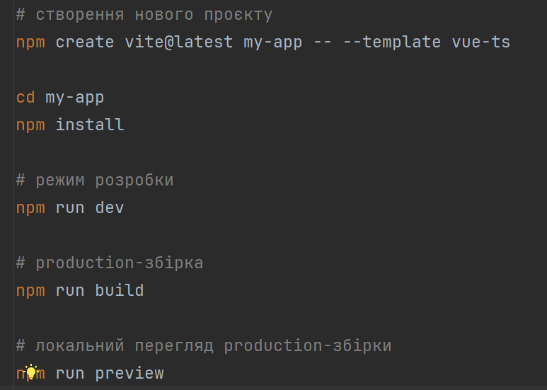
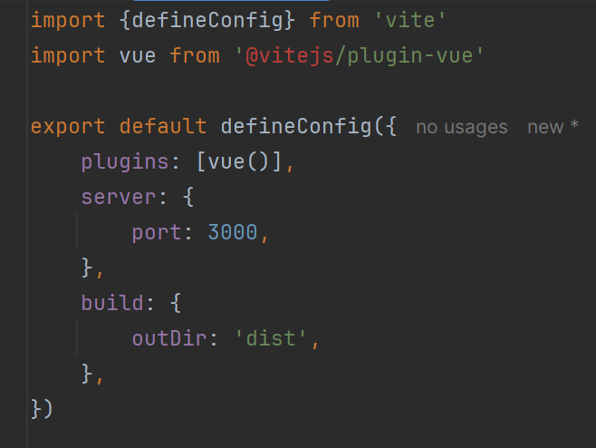
| Опис | Vite | Webpack |
| Старт dev-сервера | Миттєвий | Пропорційний розміру проєкту |
| HMR | Дуже швидкий, не залежить від розміру | Уповільнюється з ростом проєкту |
| Конфігурація | Мінімальна «з коробки» | Зазвичай велика й складна |
| Продакшн-бандлер | Rolldown (Rust) | Власний JS-бандлер |
| Екосистема | Молодша, але швидко зростає | Найбільша, найзріліша |